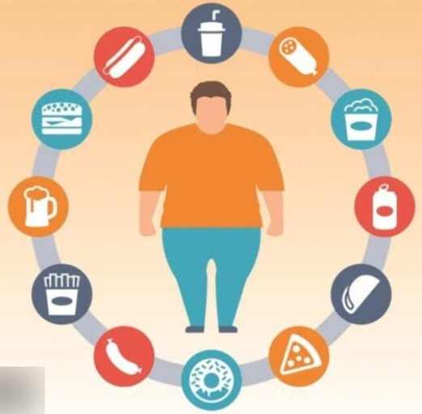
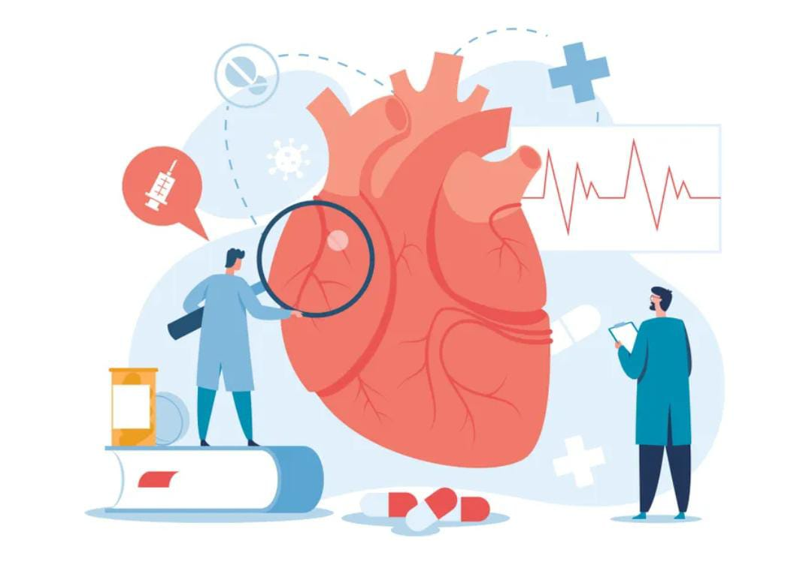

La alimentación es lo que el ser humano ingiere día a día para lograr fortalecer los órganos, obtener más energía y desarrollar las capacidades cerebrales.
De lo contrario, tener una alimentación o nutrición mal balanceada puede causar que el individuo no logre progresar con ninguna de las tres acciones ya antes nombradas.
No todas las personas tienen gustos alimenticios similares, o se nutren de la misma forma, pues la rutina o las actividades que realizan constantemente, los llevan a alimentarse de maneras distintas.
Por ejemplo, un deportista jamás tendrá una alimentación similar a una persona dedicada a los oficios del hogar. Pues la rutina del atleta lo lleva a ingerir comida sana, sobre todo alimentos proteínicos, para así tener una buena energía en todo momento.
La cultura tiene mucho que ver con la alimentación, principalmente porque cada persona tiene diferentes costumbres y creencias que los lleva a alimentarse según las reglas de esas tradiciones.
Todo lo que comemos no solo nos aporta la energía necesaria para enfrentarnos día a día a nuestra rutina sino que también es un aporte vital para la salud ya que es la que nos permite crecer y desarrollarnos durante toda nuestra vida, por esta razón la alimentación influye de forma directa en la manera en la que envejece nuestro organismo con el paso de los años.
En este sentido, llevar una buena alimentación combinado con un estilo de vida adecuado, nos ayudará para vivir de forma plena y por más tiempo.
Evita la diabetes
La diabetes es una de las enfermedades más peligrosas que puede tener el ser humano en su organismo, por ello, los médicos recomiendan consumir frutas regularmente, dado que contienen un alto contenido de azúcar natural.
Te mantiene activo
El consumir frutas y verduras, las cuales están compuestas por las vitaminas A, B, C y D hace que te mantengas activo y de esta forma puedes lograr un mejor rendimiento en tu oficina, casa y gimnasio. Consumir frutos también permite que mantengas un estomago sano y libre de grasa.
Previene La Desnutrición
A pesar que esta patología se presenta mayormente en los niños, los adultos y adolescentes no están expuestos a ella. Para prevenirla lo ideal es consumir carbohidratos, fibras, calcio entre otras proteínas que ayudan a mantenernos saludables.
Te ayuda a mantener el peso
Lo bueno de comer sano y tener una alimentación balanceada es que puedes disfrutar de una figura esbelta. Si alternas comida sana y haces ejercicios te sentirás mejor contigo mismo.
Te ayuda a mantener joven
Los antioxidantes que se obtienen al consumir una dieta balanceada permiten que tu piel se vea más joven. Si consumes zanahoria, pepino, naranja entre otras verduras y frutas ayudarás a que tú cabello también se mantenga brillante y lleno de vida.
Menta sana
Los oxigenantes cerebrales también los podemos hallar en los chocolates, arándanos, yogurt, té verde, avena, cúrcuma, brócoli, coliflor, nueces, apio y pescado. Estos ayudan a mantener sano nuestro cerebro, debido a que es uno de los órganos más importante del cuerpo.
Combate la obesidad
Esta es otra de las fuertes enfermedades que se presentan en una persona, bien sea por su mala alimentación o por su alto y excesivo consumo de comidas chatarras y azucares. Para evitarla lo ideal es que asistas a un nutricionista o simplemente en tus comidas ten en cuenta las verduras, proteínas y carbohidratos.
Mejora El Estado De Ánimo
Otro de los beneficios de una buena alimentación. Por ello, no dejes nunca de alimentar el organismo, el hecho de que no consumas algunas de las tres comidas hace que tu cuerpo obtenga reacciones negativas, tales como: molestias en el estómago, dolores de cabeza, pérdida de peso.
Mantiene fuerte los huesos
Nuestro sistema óseo también es importante para nosotros, a través de él podemos mover nuestras manos, pies y todas las extremidades. El alimentarnos con comidas bajas en calcio, fibra y sodio hacen que nuestros huesos se movilicen. Por esta razón, no dejes de consumir estos minerales que te mantienen activo y sano.
Protege el corazón
Al tener una alimentación balanceada este órgano se mantiene lleno de vida. El ingerir frutos o verduras con poca grasa lo ayuda a trabajar eficaz.
DESVENTAJAS DE UNA MALA ALIMENTACIÓN
Una alimentación no balanceada con faltas de proteínas ocasiona que el organismo, los huesos y la vitalidad del ser humano no tengan el suficiente desarrollo en cada una de sus etapas. El consumir azucares y carbohidratos de forma excesiva y constante en nuestro plato de comida, así como ingerir pocos nutrientes, permiten la activación de patologías crónicas que pueden causar la muerte.
– La diabetes
– La desnutrición
– La obesidad
– Enanismo
– Bulimia y Anorexia
– Celiaquía
Otras de las desventajas que pueden causar una mala alimentación es el aumento de la hipertensión arterial, así como también eleva la glucemia, causa dolores de cabeza, ocasiona la pérdida de energía, daña el sistema inmunológico e incrementa el estrés y la fatiga. Al mismo tiempo frena el desarrollo de los órganos y músculos en los adolescentes y además evita el buen funcionamiento cerebral.

CONSEJOS PARA REDUCIR ESTAS DESVENTAJAS
– Evitar el alto consumo de sal y azúcar
– Tratar de no consumir alimentos que contengan elevados porcentajes de grasa
– Tomar de seis a ocho vasos de agua durante el día
– Controlar el consumo de carnes
– Evita comer alimentos chatarras
– Realizar ejercicios cada media hora durante cinco días a la semana
– Tratar de no ser sedentarios
Cada uno de los beneficios expuestos son claves para tener un cuerpo y una mente sana. En caso de que no se pueda tener una alimentación balanceada por sí mismo, se recomienda asistir a un nutricionista, el cual ayudará a evitar trastornos alimenticios que no sean de utilidad para el organismo. Además nos indicará algunas recetas necesarias para mantener nuestra salud, y mejorar algún problema que tengamos.



– Evitar el alto consumo de sal y azúcar
– Tratar de no consumir alimentos que contengan elevados porcentajes de grasa
– Tomar de seis a ocho vasos de agua durante el día
– Controlar el consumo de carnes
– Evita comer alimentos chatarras
– Realizar ejercicios cada media hora durante cinco días a la semana
– Tratar de no ser sedentarios
Cada uno de los beneficios expuestos son claves para tener un cuerpo y una mente sana. En caso de que no se pueda tener una alimentación balanceada por sí mismo, se recomienda asistir a un nutricionista, el cual ayudará a evitar trastornos alimenticios que no sean de utilidad para el organismo. Además nos indicará algunas recetas necesarias para mantener nuestra salud, y mejorar algún problema que tengamos.